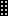

Contents
Today¶
This screen allows user to have a global view of its projects and tasks.
Note
- This screen is the first to be displayed on each connection.
- You can define other screen will be displayed in Users parameters screen.
Section: Messages¶
Messages section
Messages
- Messages are displayed depends on affected project or user profile.
- Every message is component by title
 and message
and message  .
. - Messages are defined in Messages screen.
- Click on to print Today screen.
Parameters
- Click on to access screen parameters.
Today parameters dialog box
Period for task selection
- Allows to define the period for tasks will be displayed.
Field: Due date
- Select only items with due date less than today plus this selected period.
Field: Or not set
- Select also items with due date not set.
Items to be displayed
- Allows to define sections displayed on the screen.
Note
- Allows to reorder sections displayed with drag & drop feature.
- Using the selector area button icon drag .
Section: Start guide¶
- Start page for new installations to assist the administrator in the first configuration steps.
- A progress display allows to determine the percent of complete installation.
- You can hide this section on startup, just unchecked .
- This section will not be displayed anymore.
- To show it again, select it as the start page in Users parameters screen.
Start guide section
Section: Projects¶
A quick overview of projects status.
The projects list is limited to the project visibility scope of the connected user.
Projects section
Scope of the numbers counted
- Checkboxes allow to filter displayed projects:
- To do: Projects to do.
- Not closed : Projects to do and done.
- All : Projects to do, done and closed.
Projects name
- Click on the name of a project will directly move to it.
Manuel indicators
- Manuel indicator can be set on project.
- Trend and health status indicators are displayed.
Icon: Trend
- This icon allows to display the trend of the project.
Icon: Health status
- This icon allows to display the health status of the project.

Progress
- Calculated progress and overall progress are displayed.
Calculated progress
- Actual progress of the work of project.
Note
On mouse over the bar
- On each project shows part of “to do” (red) compared to “done and closed” (green).
Overall progress
- Additional progress manually selected for the project.


Project metrics
- Some metrics are displayed on each project.

| Field | Description |
|---|---|
| Left | Left work for the project. |
| Margin | Work margin. |
| End date | Planified end date of the project. |
| Late | Number of late days in project. |
Numbers of elements concerned to project
- Numbers of elements concerned to a project are displayed.

Note
On mouse over the bar
- On each element shows part of “to do” (red) compared to “done and closed” (green).
Sections: Tasks¶
Here are listed, as a “To do list” all the items for which the connected user is either “assigned to”, “responsible of” or “issuer or requestor of”.
Click on an item will directly move to it.
Note
Parameter: Max items to display
- Number of items listed here are limited to a value defined in Global parameters.
| Field | Description |
|---|---|
| id | Unique Id for the item. |
| Project | The project concerned by the item. |
| Type | Type of item. |
| Name | Name of the item. |
| Due date | Planned end date or due date. |
| Status | Actual status of the item. |
| Issuer | Flag on indicate the user is the issuer for the item. |
| Resp. | Flag on indicate the user is the responsible for the item. |
Column: Id
- Id column displayed unique Id and specific icon for the item.
Extending section¶
You can select any report to be displayed on the Today screen.
Add selected report
- To do this, just go to the selected report, select parameters and display result (to check it is what you wish on today screen).
- Click on to insert this report with parameter on the Today screen.
- Any unchanged parameter will be set as default value.
- These reports will be displayed on Today screen like other pre-defined parts.
Report selection
Manage extending section
- Click on to access screen parameters.
- You can reorder like any other parts.
- Click on
 to completely remove them from the list.
to completely remove them from the list.
Parameters with extending parts dialog box